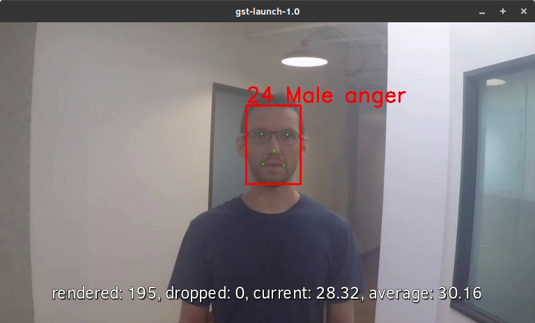

Media Reference Stack¶
The Media Reference Stack (MeRS) is a highly optimized software stack for Intel® architecture to enable media prioritized workloads, such as transcoding and analytics.
This guide explains how to use the pre-built MeRS container image, build your own MeRS container image, and use the reference stack.
Overview¶
Finding the balance between quality and performance, understanding all of the complex standard-compliant encoders, and optimizing across the hardware-software stack for efficiency are all engineering and time investments for developers.
The Media Reference Stack (MeRS) offers a highly optimized software stack for Intel Architecture to enable media prioritized workloads, such as transcoding and analytics. MeRS abstracts away the complexity of integrating multiple software components and specifically tunes them for Intel platforms. MeRS allows media and visual cloud developers to deliver experiences using a simple containerized solution.
Prerequisites¶
MeRS can run on any host system that supports Docker*.
The steps in this guide use Clear Linux* OS as the host system.
- To install Clear Linux OS on a host system, see how to install Clear Linux* OS from the live desktop.
- To install Docker* on a Clear Linux OS host system, see the instructions for installing Docker*.
Important
For optimal performance, a processor with Vector Neural Network Instructions (VNNI) should be used. VNNI is an extension of Intel® Advanced Vector Extensions 512 (Intel® AVX-512) and is available starting with the 2nd generation of Intel® Xeon® Scalable Platform, providing AI inference acceleration.
Stack Features¶
The MeRS provides a pre-built Docker image available on DockerHub, which includes instructions on build the image from source. MeRS is open-sourced to ensure developers have easy access to the source code and are able to customize it. MeRS is built using the clearlinux:latest Docker image and aims to support the latest Clear Linux OS version.
MeRS provides the following libraries:
| SVT-HEVC | Scalable Video Technology for HEVC encoding, also known as H.265 |
| SVT-AV1 | Scalable Video Technology for AV1 encoding |
| x264 | x264 for H.264/MPEG-4 AVC encoding |
| MKL-DNN | Intel® Math Kernel Library for Deep Neural Networks |
Components of the MeRS include:
- Clear Linux OS as a base for performance and security
- Intel® Distribution of OpenVINO™ toolkit for inference.
- FFmpeg with Scalable Video Technology (SVT) plugins for encoding, decoding, and transcoding.
- GStreamer with Scalable Video Technology (SVT) and OpenVINO™ toolkit plugins for analytics.
Note
The pre-built MeRS container image configures FFmpeg without certain elements (specific encoder, decoder, muxer, etc.) that you may require. If you require changes to FFmpeg we suggest starting at Building the MeRS container image from source.
Note
The Media Reference Stack is a collective work, and each piece of software within the work has its own license. Please see the MeRS Terms of Use for more details about licensing and usage of the Media Reference Stack.
Getting the pre-built MeRS container image¶
Pre-built MeRS Docker images are available on DockerHub at https://hub.docker.com/r/clearlinux/stacks-mers
To use the MeRS:
Pull the image directly from Docker Hub.
docker pull clearlinux/stacks-mers
Note
The MeRS docker image is large in size and will take some time to download depending on your Internet connection.
If you are on a network with outbound proxies, be sure to configure Docker allow access. See the Docker service proxy and Docker client proxy documentation for more details.
Once you have downloaded the image, run it with:
docker run -it clearlinux/stacks-mers
This will launch the image and drop you into a bash shell inside the container. GStreamer and FFmpeg programs are installed in the container image and accessible in the default $PATH. These programs can be used as you would normally outside of MeRS.
Paths to media files and video devices, such as cameras, can be shared from the host to the container with the --volume switch using Docker volumes.
Building the MeRS container image from source¶
If you choose to build your own MeRS container image, you can optionally add
customizations as needed. The Dockerfile for the MeRS is available on
GitHub and
can be used for reference.
The MeRS image is part of the dockerfiles repository inside the Clear Linux OS organization on GitHub. Clone the
stacksrepository.git clone https://github.com/intel/stacks.git
Navigate to the
stacks/mers/clearlinuxdirectory which contains the Dockerfile for the MeRS.cd ./stacks/mers/clearlinuxUse the docker build command with the
Dockerfileto the MeRS container image.docker build --no-cache -t clearlinux/stacks-mers .
Using the MeRS container image¶
Below are some examples of how the MeRS container image can be used to process media files.
The models and video source can be substituted from your use-case. Some publicly licensed sample videos are available at sample-videos repsoitory for testing.
Example 1: Transcoding¶
This example shows how to perform transcoding with FFmpeg.
On the host system, setup a workspace for data and models:
mkdir ~/ffmpeg mkdir ~/ffmpeg/input mkdir ~/ffmpeg/output
Copy a video file to
~/ffmpeg/input.cp </path/to/video> ~/ffmpeg/input
Run the clearlinux/stack-mers docker image, allowing shared access to the workspace on the host:
docker run -it \ -v ~/ffmpeg:/home/mers-user:ro \ clearlinux/stacks-mers:latest
After running the docker run command, you enter a bash shell inside the container.
From the container shell, you can run FFmpeg against the videos in
/home/mers-user/inputas you would normally outside of MeRS.For example, to transcode raw yuv420 content to SVT-HEVC and mp4:
ffmpeg -f rawvideo -vcodec rawvideo -s 320x240 -r 30 -pix_fmt yuv420p -i </home/mers-user/input/test.yuv> -c:v libsvt_hevc -y </home/mers-user/output/test.mp4>
Some more generic examples of FFmpeg commands can be found in the OpenVisualCloud repository and used for reference with MeRS.
For more information on using FFmpeg, refer to the FFmpeg documentation.
Example 2: Analytics¶
This example shows how to perform analytics and inferences with GStreamer.
The steps here are referenced from the gst-video-analytics Getting Started Guide except simply substituting the gst-video-analytics docker image for the clearlinux/stacks-mers image.
The example below shows how to use the MeRS container image to perform video with object detection and attributes recognition of a video using GStreamer using pre-trained models and sample video files.
On the host system, setup a workspace for data and models:
mkdir ~/gva mkdir ~/gva/data mkdir ~/gva/data/models mkdir ~/gva/data/models/intel mkdir ~/gva/data/models/common mkdir ~/gva/data/video
Clone the opencv/gst-video-analytics repository into the workspace:
git clone https://github.com/opencv/gst-video-analytics ~/gva/gst-video-analytics cd ~/gva/gst-video-analytics git submodule init git submodule update
Clone the Open Model Zoo repository into the workspace:
git clone https://github.com/opencv/open_model_zoo.git ~/gva/open_model_zoo
Use the Model Downloader tool of Open Model Zoo to download ready to use pre-trained models in IR format.
Note
If you are on a network with outbound proxies, you will need to configure set environment variables with the proxy server. Refer to the documentation on Proxy configuration for detailed steps.
On Clear Linux OS systems you will need the python-extras bundle. Use sudo swupd bundle-add python-extras for the downloader script to work.
cd ~/gva/open_model_zoo/tools/downloader python3 downloader.py --list ~/gva/gst-video-analytics/samples/model_downloader_configs/intel_models_for_samples.LST -o ~/gva/data/models/intel
Copy a video file in h264 or mp4 format to
~/gva/data/video. Any video with cars, pedestrians, human bodies, and/or human faces can be used.git clone https://github.com/intel-iot-devkit/sample-videos.git ~/gva/data/video
This example simply clones all the video files from the sample-videos repsoitory.
From a desktop terminal, allow local access to the X host display.
xhost local:root export DATA_PATH=~/gva/data export GVA_PATH=~/gva/gst-video-analytics export MODELS_PATH=~/gva/data/models export INTEL_MODELS_PATH=~/gva/data/models/intel export VIDEO_EXAMPLES_PATH=~/gva/data/video
Run the clearlinux/stack-mers docker image, allowing shared access to the X server and workspace on the host:
docker run -it --runtime=runc --net=host \ -v ~/.Xauthority:/root/.Xauthority \ -v /tmp/.X11-unix:/tmp/.X11-unix \ -e DISPLAY=$DISPLAY \ -e HTTP_PROXY=$HTTP_PROXY \ -e HTTPS_PROXY=$HTTPS_PROXY \ -e http_proxy=$http_proxy \ -e https_proxy=$https_proxy \ -v $GVA_PATH:/home/mers-user/gst-video-analytics \ -v $INTEL_MODELS_PATH:/home/mers-user/intel_models \ -v $MODELS_PATH:/home/mers-user/models \ -v $VIDEO_EXAMPLES_PATH:/home/mers-user/video-examples \ -e MODELS_PATH=/home/mers-user/intel_models:/home/mers-user/models \ -e VIDEO_EXAMPLES_DIR=/home/mers-user/video-examples \ clearlinux/stacks-mers:latest
Note
In the docker run command above:
- --runtime=runc specifies the container runtime to be runc for this container. It is needed for correct interaction with X server.
- --net=host provides host network access to container. It is needed for correct interaction with X server.
- Files
~/.Xauthorityand/tmp/.X11-unixmapped to the container are needed to ensure smooth authentication with X server. - -v instances are needed to map host system directories inside Docker container.
- -e instances set Docker container environment variables. Samples need them some of them set correctly to operate. Proxy variables are needed if host is behind firewall.
After running the docker run command, it will drop you into a bash shell inside the container.
From the container shell, run a sample analytics program in
~/gva/gst-video-analytics/samplesagainst your video source.Below are sample analytics that can be run against the sample videos. Choose one to run:
Samples with face detection and classification:
./gst-video-analytics/samples/shell/face_detection_and_classification.sh $VIDEO_EXAMPLES_DIR/face-demographics-walking-and-pause.mp4 ./gst-video-analytics/samples/shell/face_detection_and_classification.sh $VIDEO_EXAMPLES_DIR/face-demographics-walking.mp4 ./gst-video-analytics/samples/shell/face_detection_and_classification.sh $VIDEO_EXAMPLES_DIR/head-pose-face-detection-female-and-male.mp4 ./gst-video-analytics/samples/shell/face_detection_and_classification.sh $VIDEO_EXAMPLES_DIR/head-pose-face-detection-male.mp4 ./gst-video-analytics/samples/shell/face_detection_and_classification.sh $VIDEO_EXAMPLES_DIR/head-pose-face-detection-female.mp4
When running, a video with object detection and attributes recognition (bounding boxes around faces with recognized attributes) should be played.
Figure 1: Screenshot of MeRS running face detection with GSTreamer and OpenVINO.
Sample with vehicle detection:
./gst-video-analytics/samples/shell/vehicle_detection_2sources_cpu.sh $VIDEO_EXAMPLES_DIR/car-detection.mp4
When running, a video with object detection and attributes recognition (bounding boxes around vehicles with recognized attributes) should be played.

Figure 2: Screenshot of MeRS running vehicle detection with GSTreamer and OpenVINO.
Sample with FPS measurement:
./gst-video-analytics/samples/shell/console_measure_fps_cpu.sh $VIDEO_EXAMPLES_DIR/bolt-detection.mp4
{kind=link}